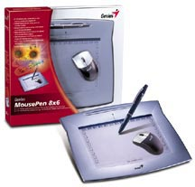
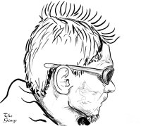
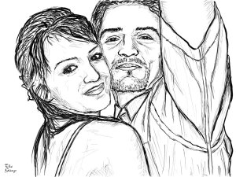
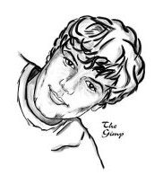

Slovak
SlovakPred pár dňami som si splnil ďalší z mojich detských snov a kúpil som si digitálny tablet. Vyberal som spomedzi produktov firmy Genius a rozhodol som sa pre MousePen 8x6, pretože poskytuje najväčšiu plochu (20.3 x 15.2cm). Cena tohto tabletu je viac než prívetivá, pohybuje sa okolo hranice 2000 korún.

Nikdy predtým som s nijakým tabletom nepracoval, preto neviem zodpovedne prehlásiť, či je lepší než napríklad produkty firmy Wacom, ale viem jednoznačne povedať, že som nadšený. Veľkosť tabletu mi vyhovuje, ba niekedy sa mi zdá, že je až príliš veľký, pretože z ľavého spodného rohu do pravého horného sa nedá dostať bez nadvihnutia ruky. Nebol by to problém, ale práve nadvihnutie ruky mi spôsobuje, že akosi strácam orientáciu. Možno to je len otázka cviku, ale tablet s väčšou plochou by som momentálne nechcel.
V kompletnom balení je okrem pera aj myš, ktorá je však na môj vkus príliš maličká a pracuje sa s ňou fakt divne, preto ju nepoužívam. Hrot pera funguje ako ľavé tlačítko myši, s tým rozdielom, že dokáže snímať úroveň prítlaku. V spodnej polovici pera sú ešte ďalšie dve tlačítka, ktoré by som však najradšej odstránil. Nemôžem si pomôcť, ale zavadzajú mi. Skúšal som si na ne zvyknúť a naučiť sa ich používať, ale asi je to nad moje sily. Tiež na ploche tabletu sa pri okrajoch nachádzajú programovateľné klávesy. Ani tie však nepoužívam, nakoľko mám pri kreslení ľavú ruku voľnú a ovládam klávesové skratky.

Na priloženom CD sú ovládače len pre systém MS Windows. Po kratšom googlení som však našiel aj ovládače pre systém GNU/Linux.
Spolu s tabletom som (znovu) objavil ešte jeden fenomén - GIMP. Spolupráca tohto tabletu s gimpom mi ako nováčikovi vyráža dych. Rôzne nástroje, ako napríklad pero alebo štetec, reagujú na prítlak rôzne. Buď sa mení intenzita farby alebo šírka čiary. Človek cíti, že má nad kurzorom absolútnu kontrolu. Jedným slovom, GIMP je skvost. A nie hocijaký, ale skvost, ktorý si zaslúži byť chválený na každom kroku. Už dlhšiu dobu som rozmýšľal, či sa oplatí venovať čas seriálu o ňom, ktorý bol publikovaný na linuxsoft.cz. Teraz som si istý..

Po nainštalovaní som si najskôr iba tak čarbal, skúšal sa podpisovať a vytešoval som sa ako malé dieťa. Neskôr som sa preorientoval na kreslenie portrétov. Prišlo to nenásilne, samo od seba. Kreslenie na počítači, resp. v gimpe má tú výhodu, že sa dajú používať vrstvy. Takže do pozadia si vložím fotografiu osoby a potom na transparentnej vrstve nad ňou kreslím. Je to cheating, uznávam, ale úžasne sa pri tom bavím a kým nezískam do ruky istotu, tak to považujem za vhodný druh tréningu.
Ak by sa vám náhodou zapáčili niektoré z tu prezentovaných portrétov a zatúžili by ste jeden taký vlastniť, kľudne mi pošlite mailom fotku a ak budem mať čas a chuť, tak ju prekreslím. Samozrejme vyhradzujem právo si kreslenie odmietnuť bez uvedenia príčiny.

Neplánujem však ostať iba pri prekresľovaní fotografií. Včera večer som sa pokúsil vytvoriť pozadie, ktorého hlavným motívom je Firefox a svoj výtvor som sprístupnil na kde-look.org, aby som zistil reakcie ľudí, ktorí nie sú poznačení tým, že ma poznajú :) Čo budem kresliť ďalej, si zatiaľ netrúfam povedať..
{kind=link}
Do skreslenia :)